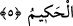

İBRAHİM (A.S.)’DA
GÜZEL BİR ÖRNEK VARDIR
4. İbrahim’de ve onunla beraber olanlarda, sizin için gerçekten güzel bir örnek
vardır. Onlar kavimlerine demişlerdi ki: “Biz sizden ve Allah’ı bırakıp
taptıklarınızdan uzağız. Sizi tanımıyoruz. Siz bir tek Allah’a inanıncaya kadar,
sizinle bizim aramızda sürekli bir düşmanlık ve öfke belirmiştir.” Şu kadar var ki,
İbrahim babasına: “Andolsun senin için mağfiret dileyeceğim. Fakat Allah’tan sana
gelecek herhangi bir şeyi önlemeye gücüm yetmez” demişti. (O müminler şöyle
dediler:) Rabbimiz! Ancak sana dayandık, sana yöneldik. Dönüş de ancak sanadır.
5. Rabbimiz! Bizi, inkâr edenler için deneme konusu kılma, bizi bağışla! Ey
Rabbimiz! Yegâne galip ve hikmet sâhibi, ancak sensin.
“İbrahim ve onunla beraber olanlarda, sizin için gerçekten güzel bir örnek vardır.”
Bu hitâb müminleredir. Râğıb demiştir ki, üsve ile isve kelimeleri, tıpkı kudve ile kıdve
gibi, insanın başkasına uyması hâlini ifâde eder. Bu uyma durumu ister güzel ister çirkin
olsun, ister sevinç ister üzüntü verici olsun fark etmez. Buradaki üsve’nin mânâsı, izini
takib etmeğe uyulmağa ve örnek alınmağa değer gerçekten çok güzel bir haslet ve huy
demektir. Âyetteki üsvetün kelimesi kânet fiilinin ismi, lekum kelimesi de onun
haberidir. “Güzel” anlamındaki hasenetün kelimesi, “güzel huy” anlamındaki üsvetün
kelimesinin sıfatı olup, genel bir anlam ifâde etmesi muhtemel olan üsve kelimesini bir
güzellikle kayıtlamaktadır. Eğer üsvetün kelimesi genel anlamda değilse, o takdirde
hasene kelimesi açıklayıcı mahiyette gelip onun güzelliğini övücü anlamınadır.
“İbrahim’de ve onunla beraber olan mümin ashabında” cümlesi güzel huy demek olan
üsve kelimesinin ikinci sıfatıdır. “Falan kişide benim için güzel örnek vardır” sözünde
tecrîd/soyutlaştırma vardır. Çünkü bu ifâdeyle, o kişinin bizzat şahsının örnek olduğu